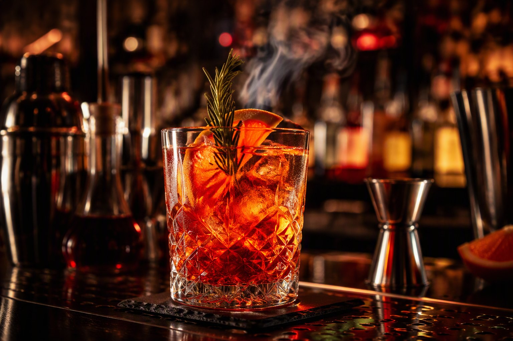

Cocktail
Signature
Ricette originali, spiriti selezionati e dettagli che fanno la differenza.
Cocktail bar · Kitchen · Trieste
Cocktail signature, sapori decisi e quella voglia di restare un altro po'.
Nel cuore di Trieste
Dall'aperitivo al dopocena, N'Joy riunisce cucina contemporanea, mixology e un'atmosfera dal carattere industrial chic.
Ingredienti selezionati, preparazioni curate e un ambiente pensato per condividere momenti autentici.
Entra nell'atmosfera →Scegli il tuo mood
Ricette originali, spiriti selezionati e dettagli che fanno la differenza.
Carne succosa, ingredienti decisi e abbinamenti da ricordare.
Tagli selezionati, cotture precise e profumi intensi.
Drink e piccoli piatti per iniziare bene e continuare meglio.

Mixology
Equilibrio, tecnica e creatività. Lasciati guidare dal bartender oppure scegli il tuo grande classico.
Brinda con noiFeel the night
Un luogo da scoprire, vivere e condividere.
Via San Nicolò 10
34121 Trieste
Riserva il tuo tavolo e preparati a vivere la tua serata N'Joy.
+39 040 364322 →Scopri cocktail, piatti, eventi e tutte le novità del locale.